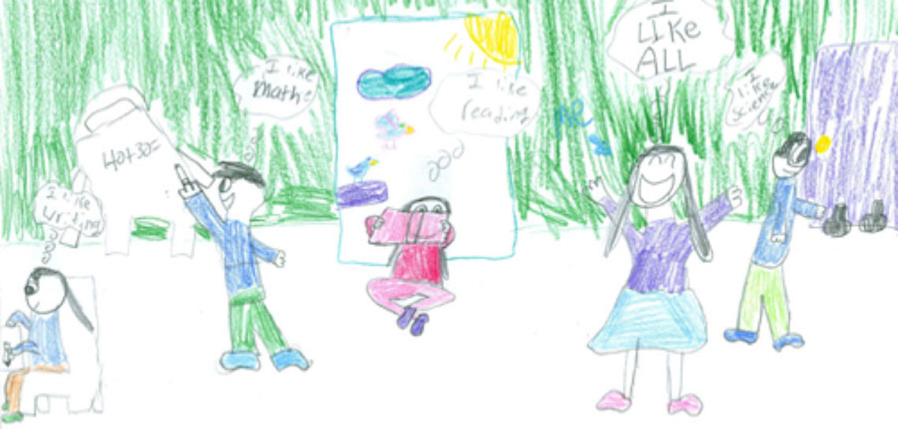

Drawing on Math
What does learning math look like through the eyes of your students?
In our era of large-scale assessments and top-down teacher evaluation models, how and when can educators truly be reflective about their teaching and classroom practices?
Over decades of research, student’s classroom drawings have proven to be a unique and valuable research tool providing perspective and understanding on how students view themselves, their teacher and classroom, and their own learning. Drawing on Math is a unique project that emerged from a 2017/2018 collaboration between educational researchers and the MAISD Regional Mathematics and Science Center using drawings from over 100 math classrooms to spur reflection and insight towards student perspectives and experiences learning math
This website provides any teacher or school the resources for collecting, analyzing, and using your own students classroom drawings as a simple reflective and research tool.
{kind=link}
{kind=link}
{kind=link}
Developed over a year-long partnership between Dr. Damian Bebell and Kristin Frang at the MAISD Regional Mathematics and Science Center, it is our hope these tools and resources may provide value for any teacher desiring greater student input and perspective into their student's learning.
“The current popularity of ‘reflective practice’ as a touchstone for teacher excellence suggests that, in the minds of many, the disposition toward reflection is central to expert teaching.”
—Robert Sternberg & Joseph Horvath
Muskegon Area Intermediate School District (MAISD)